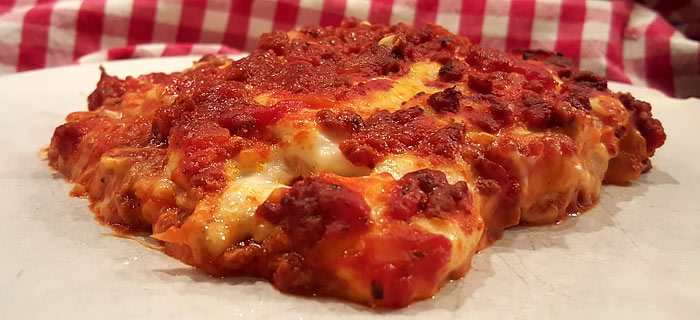

Lasagna alla bolognese

Description
The classic lasagna bolognese.
This is a classic dish, which is suprisingly easy to make and can be assembled and made in advance.
It consists of ragu alla bolognese, bechamel sauce, and lasagna sheets.
Ingredients
For the ragu alla bolognese:
- 45 ml extra virgin olive oil
- 25g unsalted butter
- 1 onion, finely chopped
- 1 celery stalk, finely chopped
- 1 carrot, finely chopped
- 150g pancetta, cubed
- 200g minced beef
- 200g minced pork
- 200ml red wine
- 2x tablespoons double-concentrated tomato puree
- 200ml stock
For the bechamel sauce:
- 40g unsalted butter
- 40g plain flour
- 500 ml milk
- salt & black pepper
- 100g grated parmesan cheese
- about 8x dried egg lasagne sheets
Steps to make
Make the ragu alla bolognese first:
- Heat the extra virgin olive oil and butter in a pan, add the onion, celery, carrot and pancetta and sweat on a gentle heat for about 10 minutes until the onion has softened.
- Add the meat and brown all over.
- Increase the heat, add the wine and allow to evaporate.
- Dilute the tomato puree in a little of the stock and stir into the meat.
- Reduce the heat to low, cover with a lid and cook on a gentle heat for 2 hours, checking and adding a little extra stock from time to time to avoid the sauce from drying out.
- Remove from the heat and let rest for a bit.
Make the bechamel sauce and assemble the lasagna alla bolognese:
- Preheat the oven to 200 degrees celsius.
- Make the bechamel sauce: Melt the butter in a small pan on a medium heat, remove from the heat, stir in the flour with a small hand whisk (this will avoid lumps from forming) until you get a paste, stir in a little milk. Return to the heat, add the remaining milk and stirring all the time, cook on a medium heat for about 3 to 4 minutes until the sauce begins to thicken. Remove from the heat, season with salt & pepper and stir in about a third of the grated parmesan.
- Line an ovenproof dish with a little of the Bolognese sauce, arrange sheets of lasagne over followed by more sauce, then a layer of bechamel sauce, sprinkle some grated parmesan and continue making layers like this until you have used up all the ingredients ending with a topping of bechamel sauce and grated parmesan cheese.
- Bake in the hot oven for about 30 - 35 minutes until golden-brown. Remove, leave to rest for a couple of minutes and serve.